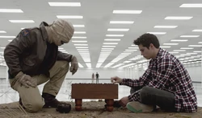
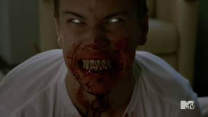

сезоны
актеры
сообщество
о нас
О чем сериал "Волчонок"?
Американский сериал «Teen Wolf» стартовал в 2011 г, завершено 6 сезонов. Сериал закрылся в 2017 г, создатели объявили о прекращении работы над проектом. Съемки проводились по заказу телеканала MTV, серии показывали по Sony Sci-Fy, в России на канале «Пятница!».
Скотт МакКолл — заурядный ученик средней школы города Бейкон Хиллс. Был изгоем в школе, сидел на скамейке запасных в команде по лакроссу. У него была астма и он должен был использовать ингалятор. Его родители в разводе, он живет со своей матерью, Мелиссой МакКолл, которая работает медсестрой в больнице. Отец Скотта — агент ФБР.
Стайлз Стилински — один из главных героев в сериале «Волчонок», которого играет Дилан О’Брайен. Стайлз — сын шерифа Стилински, а также лучший друг Скотта МакКолла. Стайлз часто слушает полицейское радио, чтобы всегда оставаться в курсе того, что происходит в Бейкон Хиллс. Стайлз очень заинтересован о благосостоянии друзей и своей семьи, хотя у него не всегда есть идеи, как можно защитить их. Он помогает Скотту держать себя в руках и управлять собой.
Банши — фигура ирландского фольклора, женщина, которая, согласно поверьям, является возле дома обречённого на смерть человека и своими характерными стонами и рыданиями оповещает, что час его кончины близок. Лидия часто находит трупы раньше полиции, слышит различные голоса (шёпот, естественно) и способна издавать крик, который не только помогает ей сосредоточиться, но и слышен оборотнями на много миль в округе. Именно благодаря крику Дженнифер Блейк и понимает, что Лидия - банши, и первой называет её этим словом. Лидия способна предсказывать, когда кто-то близок к смерти. Именно благодаря этим способностям её и похищает Ногицунэ. Крик банши обладает мощной разрушительной силой и Лидия, концентрируя его в руках, способна использовать его как оружие
Альфа — лидер стаи оборотней. Бета или Омега могут стать Альфой, убив его. Также они могут стать Альфой через силу характера или силу воли в одиночку. Их называют "Истинный Альфа". При этом Истинные Альфы сильнее обычных. У Альф красный цвет глаз.
Укус альфы может превратить человека в оборотня. Укус обычно имеет только два исхода: превращение или смерть, хотя есть и исключения. Царапина от Альфы, если она достаточно глубока, также может превратить человека в оборотня. Альфа может исцелить очень серьезные раны, но тогда они отказываются от части "искры", которая делает их Альфами. Это может привести к потере статуса Альфы. Могут стирать и добавлять воспоминания с помощью введения когтей в шею жертвы.
Беты являются членами стаи и благодаря этому, они считаются сильнее Омег. Желтый цвет глаз является наиболее распространенным среди Бет. Они не имеют никаких особых способностей, кроме тех, что упоминались выше. Бета и Омега показывают различные уровни квалификации, основанные на опыте, поэтому сравнивать их мощь трудно. Можно превратится в оборотня, если выпить дождевой воды из следа Альфы.
Омега - волк одиночка. Обычно омегами становятся оборотни, которых изгнали из стаи, но омегой можно стать по собственному желанию - покинуть свою стаю. Омегами также считаются волки, которые потеряли свою стаю или остались единственные в живых, например, после налета охотников. Омеги могут находится и в стае, но в ней их считают шестерками: их могут бить, у них нет никаких прав, их никому не жалко, они всегда едят последними и если омега погибнет, то никто не обратит на это внимание. Омеги редко выживают в одиночку.
Стая Скотта МакКолла
Стая Скотта сформировывается на протяжении всего сериала. Она появилась задолго до того, как глаза Скотта стали красными, а он сам – полноправным альфой. Символ стаи Скотта – татуировка, сделанная у Скотта на плече: круг с кругом внутри.
Стая Альф
Каждый член такой стаи является альфой, а значит обладает немалой силой. Всех альф Девкалион (альфа альф) заполучил, убедив их убить родную стаю, чтобы стать альфами.
В греческой мифологии с головой и шеей, туловищем, в виде змеи. В переносном смысле — необоснованная, несбыточная идея. Биология Химерами также называются животные или растения, разные клетки которых содержат генетически разнородный материал, в отличие от обычных организмов, у которых каждая клетка содержит один и тот же набор генов. Химеры являются частным случаем . Возникает в результате мутаций, рекомбинаций, нарушения клеточного деления. Химеры — существа с несколькими наборами ДНК. Являются экспериментами Врачевателей страха (Ужасных докторов), которые для своих пока неясных целей создают уникальных существ, но пока известны только два удачных — Тео и Трейси.
Дикая Охота, Призрачная Охота, Неистовый Гон — в скандинавской мифологии группа всадников со сворой собак, охотящиеся на души. В скандинавских мифах бог Один со свитой несётся по миру и собирает души людей. Те, кто встречал Дикую охоту, попадали в другую страну (мир?), а кто осмеливался заговорить - обрекал себя на смерть. Всадники выглядят как коричневые ковбои времён Дикого Запада. Они носят старую, потёртую и запыленную одежду: тёмные плащи, ковбойские шляпы, платки на шее. Передвигаются на тёмных лошадях. Лица Всадников похожи на лица мумий: у них нет глаз, кожа сухая и сморщенная, туго обтягивающая череп.

Ногицунэ ("дикая лиса") – самый сильный, опасный и злой вид кицунэ, которого называют "пустым". Он приносит боль и несчастия, раздор и хаос, ими же и питается. Но для этого он должен вселиться в человека, т.к. не имеет постоянной формы тела. Чтобы это произошло, нужно к нему воззвать. Но взывать к духу обманщика опасно: у него бывает очень странное чувство юмора, но он – не убийца. Он жаждет иронии. Он хочет разыграть, хочет пошутить. А убийства – лишь побочный эффект. Ногицунэ – ненастоящий демон, а скорее озорник, шутник и трикстер. По поведению напоминает скандинавского бога Локи.
Жевода́нский зверь (фр. La Bête du Gévaudan, окс. La Bèstia de Gavaudan) — прозвище волкоподобного существа, зверя-людоеда. Он описывался очевидцами, как хищник наподобие волка, но размером с корову, с очень широкой грудью, длинным гибким хвостом с кисточкой на конце, как у льва, вытянутой мордой, как у борзой, с небольшими заострёнными ушами и большими, выдающимися из пасти клыками.

Вендиго — вид сверхъестественных существ, людоеды. Эти злобные сверхъестественные существа стали неприятным открытием для жителей Нового Света. Вендиго известны своей неудержимой тягой к человеческой плоти, которая вынуждает их убивать даже несмотря на здравый смысл и их взгляды. Вендиго, эти коварные твари, могут поддерживать внешний вид человека, пряча свои многочисленные острые клыки за губами, как и Канима. Однако, когда они принимают свой истинный облик, глаза вендиго сияют белым светом.
Ужасные Доктора (Врачеватели страха) — главные антагонисты 5 сезона, по словам одного из героев, ученые. Деятельность Ужасных Докторов довольно пугающая: они превращают обычных существ в нечто совершенно иное и уникальное, воздействуя на структуру их ДНК путем добавления некоторых улучшений. Первый и, возможно, единственный удавшийся эксперимент — Тео. Остальных же, неудачных, они убивают, определяя это по ртути, выделяющейся через какое-то время после произведенных изменений.
обо мне
ВНИМАНИЕ:
информация полностью взята с интернета